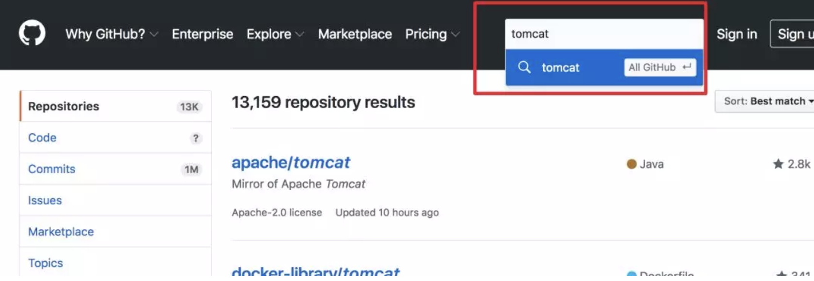
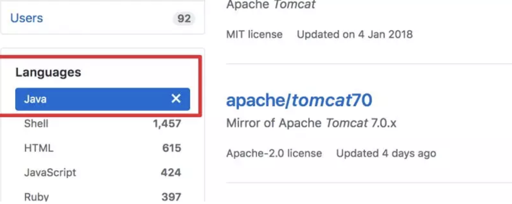
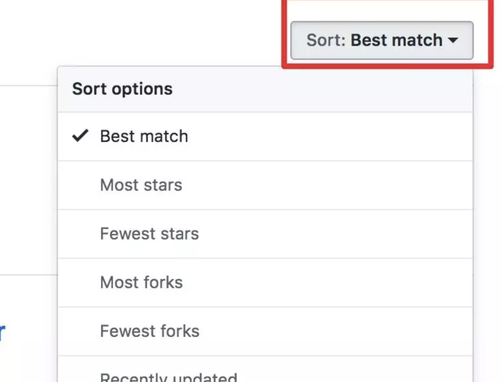
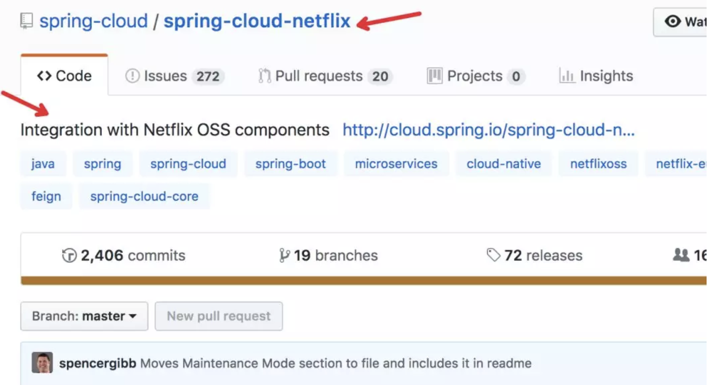
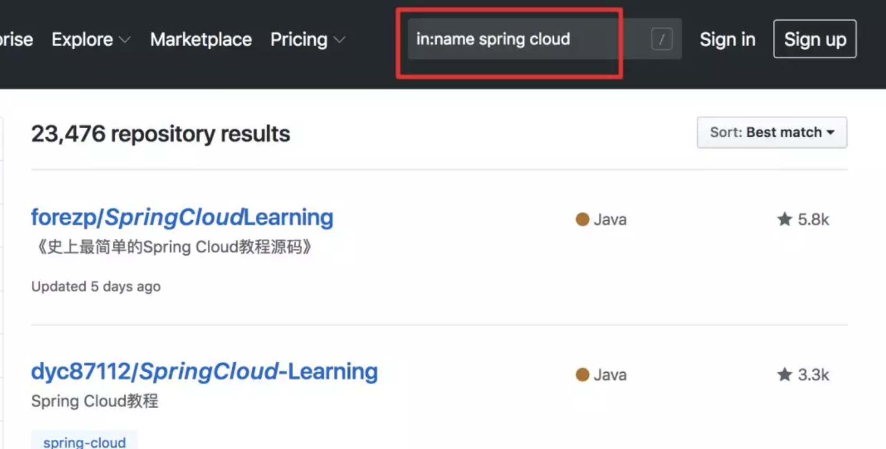

你在 GitHub上搜索代码时，是怎么样操作的呢？是不是也是像我这样，直接在搜索框里输入要检索的内容，然后不断在列表里翻页找自己需要的内容？

或者是简单筛选下，在左侧加个语言的过滤项。

再或者改变一下列表的排序方式

这就是「全部」了吗？
一般的系统检索功能，都会有一个「高级搜索」的功能。需要在另外的界面里展开，进行二次搜索之类的。 GitHub 有没有类似的呢？
答案是「肯定的」。做为一个为万千工程师提供服务的网站，不仅要有，而且还要技术范儿。
如果我们自己开发一个类似的应用，会怎样实现呢？
带着思路，咱们一起来看看，GitHub 是怎样做的。
这里我们假设正要学习 Spring Cloud，要找一个 Spring Cloud 的 Demo 参考练手。
明确搜索仓库标题、仓库描述、README
GitHub 提供了便捷的搜索方式，可以限定只搜索仓库的标题、或者描述、README等。
以Spring Cloud 为例，一般一个仓库，大概是这样的

其中，红色箭头指的两个地方，分别是仓库的名称和描述。咱们可以直接限定关键字只查特定的地方。比如咱们只想查找仓库名称包含 spring cloud 的仓库，可以使用语法
in:name 关键词

如果想查找描述的内容，可以使用这样的方式：
in:descripton 关键词
这里就是搜索上面项目描述的内容。
一般项目，都会有个README文件，如果要查该文件包含特定关键词的话，我想你猜到了
in:readme 关键词
明确搜索 star、fork 数大于多少的
一个项目 star 数的多少，一般代表该项目有受欢迎程度。虽然现在也有垃圾项目刷 star ，但毕竟是少数， star 依然是个不错的衡量标准。
stars: > 数字 关键字。
比如咱们要找 star 数大于 3000 的Spring Cloud 仓库，就可以这样
stars:>3000 spring cloud
如果不加 >= 的话，是要精确找 star 数等于具体数字的，这个一般有点困难。
如果要找在指定数字区间的话，使用
stars: 10..20 关键词
fork 数同理，将上面的 stars 换成 fork，其它语法相同
明确搜索仓库大小的
比如你只想看个简单的 Demo，不想找特别复杂的且占用磁盘空间较多的，可以在搜索的时候直接限定仓库的 size 。
使用方式：
size:>=5000 关键词
这里注意下，这个数字代表K, 5000代表着5M。
明确仓库是否还在更新维护
我们在确认是否要使用一些开源产品，框架的时候，是否继续维护是很重要的一点。如果已经过时没人维护的东西，踩了坑就不好办了。而在 GitHub 上找项目的时候，不再需要每个都点到项目里看看最近 push 的时间，直接在搜索框即可完成。
元旦刚过，比如咱们要找临近年底依然在勤快更新的项目，就可以直接指定更新时间在哪个时间前或后的
pushed:>2019-01-03 spring cloud
咱们就找到了1月3号之后，还在更新的项目。
你是想找指定时间之前或之后创建的仓库也是可以的，把 pushed 改成 created 就行
明确搜索仓库的 LICENSE
咱们经常使用开源软件，一定都知道，开源软件也是分不同的「门派」不同的LICENSE。开源不等于一切免费，不同的许可证要求也大不相同。 2018年就出现了 Facebook 修改 React 的许可协议导致各个公司纷纷修改自己的代码，寻找替换的框架。
例如咱们要找协议是最为宽松的 Apache License 2 的代码，可以这样
license:apache-2.0 spring cloud
明确搜索仓库的语言
比如咱们就找 Java 的库， 除了像上面在左侧点击选择之外，还可以在搜索中过滤。像这样：
language:java 关键词
明确搜索某个人或组织的仓库
比如咱们想在 GitHub 上找一下某个大神是不是提交了新的功能，就可以指定其名称后搜索，例如咱们看下 Josh Long 有没有提交新的 Spring Cloud 的代码，可以这样使用
user:joshlong
找某个组织的代码话，可以这样：
org:spring-cloud 就可以列出具体org 的仓库。
组合使用
把 Java 项目过滤出来，多个查询之间「空格」分隔即可。
user:joshlong language:java